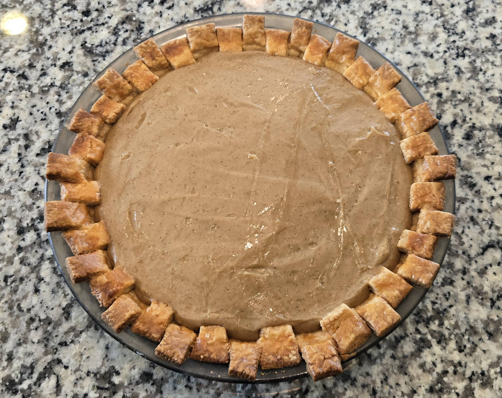

Cinnamon Butterscotch Pie Recipe
This recipe comes from the Nerdy Nummies YouTube channel, and a link to the original recipe can be found here.

This recipe comes from the Nerdy Nummies YouTube channel, and a link to the original recipe can be found here.